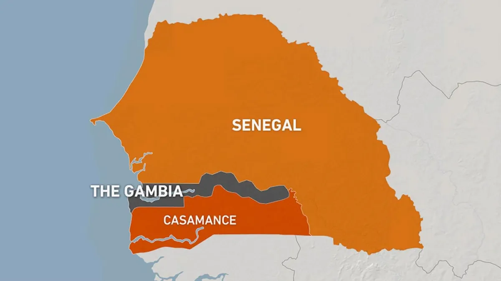
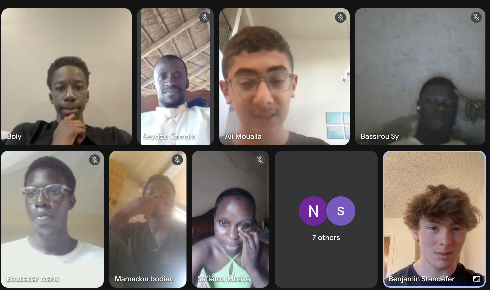

Recap + Photos: Lessons in Senegal
By Ben Standefer • July 2025
Back to News
GNO Far. “We are together” in Wolof. We reached out to this small nonprofit in Casamance almost 5 months ago. Now, after weeks of planning, gathering, and teaching, we’ve been able to reach over 100 students across the region and take another major step in Binary Tree’s mission.
Not only was this one of our biggest programs to date (and a bit more manageable of a time difference), these lectures posed several new challenges to our team:

-
Entirely in French.
We had to recruit three dedicated students from the Dallas International School to teach our classes. Special shoutout to Boly, who also spoke Wolof and really connected with the students.
-
Completely new subject matter.
We built a tailored curriculum from the ground up focused on digital entrepreneurship, a highly requested topic in student feedback. Building (and translating) it on a short timeline was tough, but ultimately fun and very rewarding.
-
Difficult schedule.
We began lessons in the last month of school—scrambling to create plans and find new volunteers while cramming for APs and finals—then juggling volunteer travel, internships, and holidays (look up Tabaski if you haven’t heard of it!).

Despite and because of all of this, I am thrilled we pushed through and completed this course. It was an amazing opportunity. I learned so much more about West African culture than I ever thought I would. Now, I just can’t wait to return.